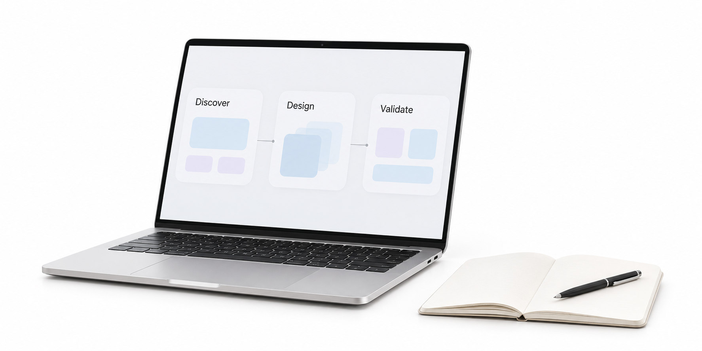

01 · 用户洞察
先理解人，
再定义问题。
走进具体场景，理解用户的动机与困难，找到真正值得解决的那个问题。

关注方向
三种视角。一个出发点：人。
01 · 用户洞察
走进具体场景，理解用户的动机与困难，找到真正值得解决的那个问题。
02 · AI 产品体验
把模型的能力放进自然的交互，让用户看得懂、用得顺，也能掌控结果。
03 · 价值验证
在质量、体验与成本之间做取舍，用真实使用中的反馈，找到下一步。
保持好奇，也保持求证。
关于商棋
你好，我是商棋。
一名对人和技术都充满好奇的
AI 产品经理。
我关注 AI 能做什么，也关心它如何进入一个人的日常。一个更清楚的反馈、一个更顺手的流程，都可能是产品价值开始发生的地方。
这里是我的个人空间，用来记录观察、整理思考，也为接下来的作品和实践留一个位置。
在 GitHub 了解更多思考手记
关于 AI、产品，
以及两者之间的人。
模型能完成一个任务，只是起点。这个任务多久发生一次？现在的解决方式有什么不足？使用 AI 后，用户能获得什么清晰的改善？
这些问题，决定了一个能力是否值得成为产品。
让用户知道系统正在做什么、结果依据什么，以及出错后能如何修正。
信任可以从明确能力边界、提供可检查的结果和保留用户控制权这些小事开始。
一次亮眼的演示，和长期可用的产品之间，还有很多细节。
选择有代表性的真实任务，观察完成质量、时间成本与失败方式，才能找到下一轮迭代真正要解决的问题。
下一步，继续创造。
更多作品与观察，正在路上。
在 GitHub 相遇